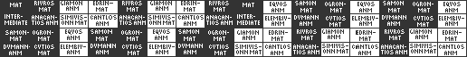
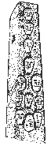

The Celts, like most Indo-European peoples, saw the world very differently than we do today. Nature was potent with magic and mystery, and they sought not to control it or create sciences for subduing it. A deep respect and veneration for nature, as the sustainment of life, provided many central motifs and a rhythm for the procession of their spiritual lives.
We must be careful how we approach an understanding of Celtic religion, for many reasons. The Celts did not keep written records, especially of their religious doctrines, for this was held to be sacrilege. Instead, they transmitted their beliefs orally. While most of this has been lost, echoes of these teachings resonate through their myths and arts.
Some scholars have attempted to reconstruct Celtic religion through studies of their myths, arts and archaeological remains and through similarities to the myths and religions of India and other Indo- European peoples, but any such reconstruction is merely an educated guess. The mysteries of the Celts are likely to remain mysteries, and this makes them all the more intriguing.
The Celts were a widely distributed people, with each tribal unit having a different character and sense of identity. Each of these tribes had its own deities, local sacred places and variations of the religious beliefs.
Furthermore, it is likely that the holy order of the Celts, like any specialised theological group, had a slightly different perspective on the religion than the laypeople did. This creates a very complex puzzle for us to unravel.
Nonetheless, we can detect many of the fundamental themes woven into the myths and sprinkled throughout the Celts' art, language and material remains. These themes — the triple goddess, the mystical Otherworld, the power of the head, shamanism and the awe of nature — will be explored.
The natural cycles of nature, such as day and night, and summer and winter, had a profound meaning for the Celts, especially those which alternated between light and darkness. Such duality was manifest in many other aspects of nature, and the Celts drew on this principle of duality in their religion. [37]
The Celts thought of the day as consisting of a dark and a light half, the new day beginning with the dark half at sunset. This is why it seems to us that many festivals begin the "night before": to the Celts, nightfall was the beginning of the new day. [37]
They also separated the year into dark and light halves, November being the beginning of the dark half and May being the beginning of the light half. The two festivals celebrating this division are remembered today as Halloween and May Day. They were particularly auspicious as transitions between light and darkness, transitions when the boundary between worlds was opened and magical forces acted chaotically.
The periods of darkness, both winter and night, were usually associated with death, the slumber of nature, and the Otherworld. According to a folk belief from Wales, people born during night can see ghosts and phantoms invisible to the children of the day. [37]
A bronze tablet unearthed in France in 1897 proved to be a Latin inscription of the ancient Celtic calendar. The tablet dates to the late first century BCE, but the calendar itself is probably older. It shows a five-year cycle, consisting of sixty months and two intercalary months, one at the beginning of the cycle and the other in the middle.
While most of the abbreviated names cannot be deciphered with certainty, important items and patterns emerge. The first half of the year begins with a month called Samon- and the second with a month called Giamon-, words which are related to surviving Celtic words for "summer" and "winter."
The months are of two kinds, "MAT," probably meaning "good" and "ANM," probably meaning "not good" (from "an mat"). The months themselves reflect a similar pattern, each consisting of two halves of contrasting dark and light, although which half is light and which is dark is still unknown.

The eve of October 31 was the beginning of the Celtic new year, which started with the dark half of the year. It was an important event in the natural order of life. Livestock were gathered for winter storage, and feasts were provided by the slaughter of cattle that couldn't be kept. [26]
This gap between the two halves of the year was not only a gap in time, but an opening between the world and the Otherworld, when the beansidhe [I] roamed the Earth to work magical mischief. This suspension of space and time extended to the laws of society, and people partook of boisterous behaviour. It is these aspects of the festival which are most prevalent in the modern celebration of Halloween. [37]
All household fires were extinguished before the festival, and then relit from the ceremonial bonfire. Some celebrations had contests for the biggest bonfire. [6]
It was a tradition in all of the Celtic lands to leave food out for the dead. [42]
The jack o'lantern is almost certainly a remembrance of the Celtic cult of the severed head, and bobbing for apples is an ancient Celtic augury.
This midpoint in the dark half of the year, February 1st, represents the returning of life to the Earth. This is the festival of Brigit [I], goddess of fertility and healing. Imbolc is sometimes also called "the feast of lights," and indeed Brigit's symbol is fire, "the fiery dart of Brigit." Brigit's cross, a solar symbol akin to the ancient swastika, is still woven by the Irish out of rushes, straw or corn husks. [48]
Imbolc may be derived from "in the belly," signifying the awakening of earth's regenerative energy and the coming of spring. This feast resurfaced in Christian tradition as Candlemas. [6]
In the Brythonic lands, Brigit was associated with the Virgin Mary, and so this feast is usually associated with Mary, and has names such as Gwyl Mair Dechrau'r Gwanwyn [W], which means "The Feast of Mary of the Beginning of Spring." [8]
This festival, on May 1st, begins the light half of the Celtic year. It is probably the feast day of Belenos [C] (Bel [I], Beli [W]), a Celtic god of fire. Maponus [W], a Welsh god of youth, is also associated with Bealtaine, as is his Irish counterpart, Aengus [I]. [6]
On May Eve, bonfires were lit and carefully extinguished. Fuel for the Bealtaine fire, often including oak trees, was collected in the morning. In ancient Ireland, no one could light a Bealtaine fire until the Ard Ri [I] ("High King") had lit the first fire on Tara Hill. [6]
At this time the livestock were brought out of winter storage and put to the fields for grazing. They were sometimes passed between two Bealtaine fires for purification. An old Bealtaine custom is fire jumping, in which people jump over the fire three times for good luck. Also, fields and homesteads were sometimes blessed with flaming foliage. [6]
Sacrifices of both animals and humans were made at this time, and sometimes the animals were thrown directly into the fire. Caesar's account of the burning wicker structure may have described some Bealtaine rite. [42]
The Bealtaine fires were ignited from tein-eígin [I] ("need-fire"), which was started by the friction of a spinning wheel. This wheel is probably related to the sun and sky god Taranis, whose is frequently associated with the wheel. [42]
The fertility themes of Bealtaine have lived on in May Day, especially in the celebration of the phallic May Pole.
August 1st was the feast of Lugh [I] or Lleu [W], a solar deity. His significance here is that of a young champion in conflict with the old god of earthly fecundity who guards the earth's essential nourishment. This festival marks the first day of autumn and the beginning of the harvest. [6]
Massive feasting and celebration ensued, including dances and competitions of skill and strength. Much of this was for the purpose of attracting mates, as this was a common time for one-year trial marriages to be contracted. The couple promised to live together for a year and a day, and separate thereafter if necessary. [26]
Some people might gather flowers to scatter at sacred places or to weave into garlands for women to wear. Bonfires were lit in some places. [6] Some of the spirit of this festival lives on today in the Scottish Highland Games.
Most religions have some notion of holy places, and designate special places for religious functions. Most Celtic holy places were outdoor sites — groves of trees, hill tops or natural enclosures. Megalithic mounds and standing stones were associated with the magic of the Otherworldly sidhe, and may have been ritual sites. There were also many sacred springs and wells that are still venerated today.
However, some indoor temples were built and used, especially during the Roman occupation. These temples range from small wooden shrines to enormous buildings of fine stone masonry. [4,13]
Holy places reflect a desire for a sacred sanctuary, separate in spirit and physicality from the rest of the world. Votive offerings, statues and sacrifices have been found at many of these sanctuaries.
While the debate over the druidic involvement in Stonehenge may never be resolved, there is certainly ample evidence that the Druids used Stone Age burial chambers and stone circles for their rites in Ireland. [42]
Burial mounds were thought of as links between the natural world and the Otherworld. The mythical Túatha Dé Danann [I] are said to have disappeared into burial mounds, and there are burial mounds at many important places in Celtic history, such as the Hill of Tara, the traditional seat of the Irish kingship.
Also at Tara is the Lía Fáil [I], the "Stone of Destiny," which is supposed to roar under the feet of the man destined to be king. There is a Scottish stone of the same propensity called the Stone of Scone, which was taken to Westminster Abbey by Edward I.
At Uisnech, a sacred druidic meeting place roughly in the center of Ireland, is a finely-engraved stone known as "the stone of division." Uisnech was, according to the medieval historian, Gerald Cambrenis, "the navel of Ireland, as it were, placed right at the center of the land." This stone, and another at Turoe in Ireland, indicates a notion of a spiritual and geographical center, with a complex division of the rest of the land into four parts. [13,37]
Pillars and columns, often with ornate and symbolic engravings, were a common feature of holy places, and may have been symbolic of the central world tree, a motif common to Celtic and Germanic myth. [13]
The oak groves of the druids are well recorded by the Greeks and the Romans. Sacred groves on the isle of Anglesey were destroyed by the Romans after the druids met there and defied their subjugation. The word druid itself is believed to be derived from the Celtic name for the oak tree.
Irish lore preserves the memory of sacred trees at holy places, such as the bile [I], the ancient tree found at the inauguration site of the king. [13]
Also of note are the so-called "Jupiter columns," built during the Roman period on the continent. These were carved in the Classical style, often with figures on the base representing the four seasons and the days of the week. The columns were raised in honor of the Romano-Celtic sky god, and represent him riding a horse in a distinctively Celtic fashion. The shaft of one such pillar is covered in oak leaves and acorns, emphasising the sky god's link with the oak. The Celtic root nemeton, which meant "an opening to the sky," was incorporated into many sanctuary names. [13]
Contrary to popular belief, the Celts also built shrines and temples. Because of the Celtic predilection for hill tops and commanding views, many of these became tourist sites for distinguished pilgrims and visitors, such as the Emperor Constantine. [13]
The earliest temples, found in Gaul and Britain, date to before the Romans. Most were made of wood, and hence few have survived. Elaborate shrines with stone carvings, pre-Roman in date but with Mediterranean influence, can be found in southern France. Later temple builders, typically Romano- Celts, created whole temples of stone, especially in Gaul. [13]
A typical temple consisted of two concentric units; an inner sanctuary, or cella [L], which might have housed sacred objects, and an enclosing ambulatory, which might have been used for processions. The cella was sometimes a tall tower-like structure, and always overlooked the surrounding ambulatory walls. [13]
Many votive offerings have been found at Celtic temples and holy sites, including human figurines, coins, weapons and (possibly sacrificial) bones. The Roman baths in Bath, England (Aquae Sulis [L] to the Romano-Celts) attracted pilgrims seeking healing or divine aid. People seeking cures sometimes deposited figures representative of their ailment. [13]
Probably no Celtic subject is as alluring, yet elusive, as that of the druids. These holy people of the Celts kept their extensive teachings secret and unwritten, probably intending them to be mysterious and exclusive. Only through elaborate deduction and cross references between mythology, philology, archaeology and history can we hope to guess at the nature of druidic thought and life.
A number of Greek and Roman writers and historians wrote about the Celts and the druids, but these writings are often plagued by prejudice, liberal interpretation and even propaganda-like statements. Caesar, for example, painted the Gauls as superstitious primitives, practising barbarian rituals such as human sacrifice and needing suppression and "civilising," which Roman imperialism could so conveniently do.
Still, Caesar's comments call for serious consideration, since he was a priest of the Roman state cult, and was a friend of a pro-Roman druid, Diviciasuc. [42]
The word "druid" (drui [I], derwydd [W]) may be derived from the word for knowledge, and possibly from the word for oak (daur [I], derw [W]). The words for tree (fid [I], gwydd [W]) and knowledge (fios [I], gwyddon [W) are very close in the Celtic tongues. This association once again emphasises the importance of the natural world. [26]
Druidism seems to have been of great renown by the fourth century BCE, for it is mentioned by Aristotle. [42]
Caesar states that Britain was the center of the druidic institution. He describes the priesthood as divided into three groups:
'The Vates practised soothsaying and studied natural philosophy. The Bards celebrated the brave deeds of their gods in verse. The Druids were concerned with divine worship, the due performance of sacrifices, both public and private, and the interpretation of ritual questions.'
He says that the training of a druid took twenty years, and refers to the sacrifice of a healthy person for the cure of a sick person, possibly suggesting a druidic notion of cosmic balance.
In his book Natural History, the Roman writer Pliny the Elder, describes a mistletoe-gathering ceremony of white-robed druids, a stereotypical image of the druid which lives on to this day. Pliny says that mistletoe was held in great awe by the Gaulish druids, especially when it grew on an oak.
Druids had to commit all learning to memory. Much of it was probably in the form of verse and riddlelike poems. In Irish, the word "to teach" also means "to sing over," and poetic devices have long been used for memorisation. [26]
While many druids may have been children in long successive lines of druidic families, the role was probably open to anyone showing great promise in verbal and memory skills. Bards were expected to be able to commit to memory any poem or prose on first hearing. [26] Caesar states that the Druids reserved writing for special purposes, so that their verses could be kept private and their memory could be cultivated. [42]
The training practices of poetic schools may provide clues as to druidic preparation. Poets had at least twelve years of training, consisting of seven grades of increasingly sophisticated material, such as grammar, myths, Ogam and laws. [26]
Much of the training of early bardic schools took place in complete darkness, such as in sacred caves, so that students might be free all of distractions. Western Highland poets were said to have studied in this manner also, shutting out all light and meditating in ascetic conditions. [26]
While we have very little evidence of female druids, women enjoyed great social status in Celtic society, and we need not necessarily assume that they were excluded from the order. Celtic mythology does not reflect the same misogyny found in cultures which strip women of high-ranking privileges. It may be the case, however, that the female role in the religious order was limited and specialised.
In an early Irish myth, Midir's wife, Fuamnach, is described as a "woman of dreadful sorcery, a woman with all of the knowledge and skill and power of her people," who were the Túatha Dé Dannan.
In the Irish myth Tain Bo Cuailgne [I], Queen Medb consults Fedelm, the prophetess of Cruachan, who gives her an augury which foretells doom.
Fionn's [I] fostermothers were said to have been two women warriors and a druidess.
The goddess Brigit [I] herself is known as the patron of poetry and memory.
The Roman writer Tacitus confirms the inclusion of women, at least in ritual, in this account:
'Drawn up on the shore was a dense mass of armed warriors. Among them, bearing flaming torches, ran women with funeral robes and dishevelled hair like Furies, and all around stood druids, raising their hands to heaven and calling down dreadful curses.'
It is surprising that shamanism is a central aspect of druidism, but the myths bear this out quite clearly.
Shamanism seems to be Asian in origin, but appears all over the world and has been carefully documented and studied by anthropologists. According to these studies, a culture develops shamanism as a way of reconciling the tribe with the animals they must hunt to survive. Initially this may be in the form of a post-hunt ritual: returning the remains of the slaughtered animal to the area that the herd roams, or drawing or performing symbolic representations of the hunt using the remains of the animal. The cave-drawings in southern France dating back 20,000 to 30,000 years may be an example of a shamanistic offering.
Eventually, however, the tribe may begin to worry how well these offerings are being received by the animals. The role of the shaman developed to act as an intermediary between the human tribe and the spirit realm.
The shaman's ceremony often includes a performance of symbolic death, after which he enters a trance-like state. In this state his soul is able to leave his body on a flight into the spirit realm, a flight which requires a perilous crossing of the chasm between worlds.
The shaman often wears animal clothing, such as a cloak of animal skin, antlers, or a headdress of feathers, so that he is recognised by the denizens of the spirit world.
The shaman's trance was sometimes assisted by hallucinatory plants, such as cannabis, mushrooms, poppy extracts and other substances.
After the shaman develops relationships with members of the spirit world, mutual bonds and contracts between the tribe and a particular species may be initiated. The tribe is said to adopt the creature as its totem, venerating it as a symbol of the tribe and refraining from killing members of its species. Often times the tribe will develop a tale tracing its lineage back to its totem.
This seems to be the progression of the development of shamanism. [43]
Cernunnos, the Horned God found on the Gundestrup Cauldron and in other early Celtic art, seems to be a shamanistic "Lord of the Animals." He wears antlers, something we might expect of a shaman, and is surrounded by a number of animals.
Shamanism often has a notion of a "great center," where the energies supporting the natural world and the supernatural one are concentrated, sometimes at a mountain or tree. This notion of a center, especially in the form of a tree, is a common motif in Celtic thought. There is the example of the "navel stone" in the center of Ireland, and the importance of the geographical and spiritual centres of the land as meeting places.
Additionally, the word "center" appears in Celtic place names. Milan, for example, was derived from the Celtic Mediolanum, and in Ireland, the name "Meath" is a synonym for "center." County Meath was the location of the Hill of Tara, seat of the High Kings. [43]
The myths have many examples of shamanistic motifs, especially in the form of names and temperaments of characters that relate them to totem animals.
The Welsh tale "Math ap Mathonwy," from the Mabinogion, presents many characters that seem like anthropomorphisms. Math means "bear," Blodeuedd means "owl" and Arianrhod means "silver wheel," in Welsh. The latter may be a metaphor for a spider's web. Kulhwch [W] is linked with the pig both by his name, "Pig-run," and his birthplace.
Some of the characters in Celtic mythology had geis [I] ("prohibitions") placed on them. These may have been derived from totemic taboos. Cúchulainn, whose name means "Hound of Chulainn" was forbidden to eat dog meat. Likewise we find Conaire [I], who was supposed to be the son of a bird, being forbidden by a geis against eating bird's flesh.
The hero Lleu [W] transformed by into an eagle, a very common totemic creature representing the spirit-flight of the shaman, after he is speared by Goronwy.
A one-eyed black giant appears in the tale of Owein [W] who is almost surely a manifestation of the Horned God Cernunnos. He is described as "keeper of the forest," and as such is able to summon all of the creatures to his call.
Another important skill of the shaman is that of shape-shifting. An example of this is the druid Uath mac Imoman [I], who, in "Briciu's Feast" is said to be able to "change himself into any form he wished."
Diarmuid O'Duibhne [I] is forbidden to hunt boar because his alter-ego lives in the shape of a boar. It is by breaking his geis that he dies.
The harpers of Cain Bile [I] turn themselves into deer to escape pursuers who mistake them for enemy spies.
Oisin [I], whose name means "little deer," was born to Sadbh while she was in deer-form. She was warned that he would remain in deer-form if she licked him. She could not refrain from a small act of tenderness, however, and her small lick on his forehead leaves a tuft of tell-tale hair.
Perhaps the most explicit shape-shifting is found in the story of the poet Taliesin who shifts shape to evade the pursuit of Ceridwen. He changes into a hare, a fish, a bird and a grain of corn, and to trail him Ceridwen changes into a greyhound, an otter, a falcon and a hen, who eventually pecks the grain of corn.
Another strong suggestion of shamanism is the ritual known as the tairbfeis [I] ("bull feast"). This was said to include the eating of a bull's flesh and drinking of its blood, after which the sacrificer would sleep on its hide in a dream-like trance and see the identity of the future king.
The most telling example of shamanism in the myths, however, occurs in an Irish tale in which King Ailill and Queen Medb consult the Druid mac Roth. The druid wears a bull hide cloak and a headdress of bird's feathers, identical to that of the prototypical shaman. He then proceeds "rising up with the fire into the air and skies," a precise description of a Siberian seance during which the shaman is said to leave on his spirit-flight by way of the smoke hole.
Classical writers tell us incredulously that the Celts sometimes sacrificed prisoners and spoils of war to the gods. Evidence from all of the Celtic lands, especially the Danish peat bogs, attests to this practice. Piles of valuable booty, including weapons and armour, have been found in peculiar arrangements, having been intentionally broken or burnt before being deposited. Human as well as animal bones have also been found, further substantiating these accounts.
The Celts made sacrifices to supplicate the gods for victory, and made further sacrifices to thank the gods. The vanquished were promised as offerings before battle, and therefore were not sold or enslaved. [42]
Caesar in his Gallic War describes the Celtic practice in Gaul:
'To Mars, when they have determined on a decisive battle, they dedicate as a rule whatever spoil they may take. After a victory they sacrifice such living things as they have taken, and all the other effects they gather into one place. In many states heaps of such objects are to be seen piled up in hallowed spots, and it has not often happened that a man, in defiance of religious scruple, has dared to conceal such spoils in his house or to remove them from their place, and the most grievous punishment, with torture, is ordained for such an offence.'
A special class of druids, called ovates (or vates) or seers, observed the signs of nature and sacrifice in order to prophesy. It is likely that the ovates interpreted the death throes of the victim as having special symbolic meaning. [26]
Some of the Celtic myths seem to make reference to sacrifices. In the Irish myth "The Intoxication of the Ulstermen," an old seer knows of a prophecy foretelling the death of Ulster's chiefdoms in one iron house, which can be sealed and heated from without. A few Irish tales refer to horses on stakes, which might be an ancient memory of horse sacrifice. [26]
The tairbfeis [I] ("bull feast") included the eating of a bull's flesh and drinking of its blood, after which the sacrificer would sleep on the bull's hide and dream of the future king. [26]
It is interesting that while the Celts did not use bow and arrow in battle, because they thought it cowardly to kill someone they could not see, it is believed to have been used as a method of sacrificial killing. [2]
It is certain that the druids did in fact perform human sacrifice, although we don't exactly know under what circumstances they thought it necessary.
Both Celts and Germans were said by the Classical writers to sacrifice criminals, war captives and slaves. Great leaders might offer themselves as sacrifices after being defeated, and occasionally a number of Celts might commit mass suicide in hopes of redeeming their endangered tribespeople. [42]
Dio Cassius mentions the cruel treatment of Roman ladies by Boudicca, who impaled them in the temple as offerings to a goddess. Strabo describes a gruesome divination ritual performed on war prisoners by the Celtic tribe, the Cimbri. The prisoners were met by grey-haired priestesses in white robes who consecrated them for sacrifice and hung them above an enormous bronze bowl. They then had their necks cut while the priestesses watched their writhings in order to divine the battle outcome.
It is notable that women play the central role in sacrifice and divination in both Celtic and Germanic ritual. We are reminded of the powerful female deities in Celtic and Norse myth who preside over the fates of men in life, and in battle, the Norse Valkyries and the Celtic Mórrígan [I].
One of the most compelling cases for druidic human sacrifice is the Lindow Man, found in an English bog in 1983 near Manchester and meticulously inspected by researchers. The peat bog in which he fell has preserved his body for 2,000 years.
He had dark brown or red hair, and a beard and moustache that had been trimmed by a sharp blade. His O-blood type, broad brow, small jaw and blue-grey eyes suggest Celtic ethnicity. His arms were evenly developed, which, along with his smooth hands, finely manicured fingernails and well-groomed appearance, indicate that he had been free from heavy manual labour.
He seems to have worn nothing but a band of fox fur over his shoulder. Small fragments of chaff, wheat, bran, barley grains and mistletoe pollen were found in his stomach. Chemical analysis indicates that he ate an unleavened griddlecake a short time before he died, of which a portion was held over a fire and intentionally charred.
The means of his death were rather macabre. His throat was slit through the jugular vein, his neck was broken from garroting and his skull was fractured by three blows from a narrow-bladed axe.
According to early oral and written Celtic history, fried bannock cakes were an important part of Celtic festivals. Charring a piece of the cake before it was split up among participants may have been a way of randomly choosing a victim, akin to picking straws. This may account for the charred bread he ate.
The mistletoe in his stomach suggests he may have consumed a mistletoe drink; this plant is known to have been sacred to the druids, and is even today known in Gaelic as "all-heal."
Ross and Robins believe the Lindow Man to be a druid for a number of reasons. He was healthy and well-built, yet had not the scars, calluses or uneven muscular development of a fighter or labourer. He had excessive wrinkling on his forehead, which points to long hours of concentration and contemplation, such as a druid would have to undertake. Well manicured fingernails are a well supported sign of a high-ranking person in the ancient world.
His death seems to be an example of the three-fold death reported by classical authors. According to these sources, a sacrificial victim was frequently killed in three different ways; possible methods included garrotting, beheading, drowning, hanging, burning or being shot by arrows. Some have tried to associate these methods with the primitive elements air, fire, earth and water, [26] although a strong case has been made that these three acts appease the three major Celtic gods Taranis, Esus and Teutates. [42]
The body of the Lindow Man currently rests in a display case in the British Museum in London.

The motif of the severed head is probably the most pervasive and enduring image in Celtic tradition. It has been called the Celtic equivalent of the Christian Cross by scholar Anne Ross, and, in similar fashion, frequently occurs in monuments at religious sites.
The stone Tarasque de Noves, for example, depicts a sinister grinning underworld power clutching two skulls. In some shrines, real human skulls were fitted into entrance pillars or walls.
There are a very large number of Celtic carvings of disembodied stone heads, which quite often have two or three faces. A good example is the Irish "Janus" Head.
The Celts probably saw the head as symbolic of the person as a whole, and thought of the head as the seat of thought and power. While scholars disagree as to whether or not the head itself was worshipped, it was certainly venerated as the most significant element in a human or divine image. [17]
It is well recorded in history and mythology that Celtic warriors collected the heads of their enemies, possibly in a symbolic gesture to conquer and capture their essence.
Livy records that in 216 B.C.E that the Celtic Boii tribe killed the Roman general Postumius and cut off his head, cleaned it out, gilded it and used it as a cult-vessel.
Several ancient writers attest to the Celtic practice of collecting the heads of enemies in battle, and fastening the heads to their saddles or impaling them on spears. [17]
A Celtic shrine in Entremont, Provence, has skulls attached to the wall, one of which still had a javelin-head embedded in it. This implies that the victim died in battle, and his head was made a holy object. Skulls in the Celtic shrine at Roquepertuse, Provence, are the skulls of strong healthy men, implying that they were probably killed at war. [17]
The Irish hero CuChulainn was said to collect the heads of his foes and place them on stones. Irish mythological tradition also refers to battle trophies called "brainballs," brains which had been extracted from the skulls of foes, mixed with lime and hardened into a cement-like substance. [17]
This motif rears its head in mythology as well. The best example is in the Welsh tale "Branwen," where the disembodied head of the giant Bran entertains his friends for many years, and protects Britain from invasion after it has been buried.
In Irish mythology, the severed head of Conall Cernach was extraordinarily large, and was said to have magical powers. It was prophesied that the men of Ulster would gain strength from using his head as a drinking vessel. [17]
It was quite likely that the jack o'lantern, which is carved at Halloween, the Christianised shadow of the Celtic festival Samhain, is a Celtic folk-tradition derived from the cult of the severed head. Death
Much has been written about the Celtic and Druidic notion of reincarnation and post- mortem survival, with widely varying interpretation. The Classical authors were astonished, because it was so different from their own beliefs, and hence are likely to have missed the essence of the conviction.
Posidonius wrote that a Celtic belief holds the souls of men immortal and that "after a definite number of years they live a second life when the soul passes into another body."
Julius Caesar in his Gallic War stated that a key druidic belief was that "souls do not become extinct but pass after death from one body to another." He attributed the Celts' fearlessness in battle to a lack of fear of death.
Lucan, the Roman poet, wrote romantically in the first century CE about the subject:
'You, ye druids... your teaching is that the shades of the dead do not make their way to the silent abode of Erebus or the lightless realm of Dis below, but that the same soul animates the limb in another sphere. If you sing of certainties, death is the center of continuous life.'
The powerful adversarial bulls in the Tain Bo Cuailnge [I] ("The Cattle Raid of Cooley") are said to have been incarnated as wizard swine-herds, kings of the sidhe, ravens, human champions, demons, water worms, and finally as the rival bulls in the story.
Túan [I], according to Irish myth, was an early invader of Ireland who passed through many bodies before being born as a human. He was changed into a deer, a boar, an eagle and a salmon, who is eaten by King Cairrel's wife only to be born as her son, with full memory of his past lives.
The shape-shifting and ingestation of Taliesin, who is later reborn as Ceridwen's son, is another example.
It is notable that many Celtic birth tales include the motif of the child emerging from a body of water. This is significant because of the close ties between water and Celtic goddesses.
Geoffrey Ashe suggests that the Celts believed that next life was another life like this one, in some Otherworld region such as an island or inside a sidhe. [2]
H.R. Ellis Davidson, on the other hand, notes that the Celts recognised the tendency for traits to be passed down through the generations, and even named children after dead forebears in the hopes that they would inherit some of the same "spirit," so to speak. Celtic myth implies a close link between the living and the dead, and includes imaginative tales of unusual conceptions and births. Davidson proposes that these subtleties gave outside observers a false impression. [13]
Anne Ross asserts that the Celts believed not only in continued existence beyond the tomb, but also in rebirth in human and animal form. [42]
Still others interpret the reincarnation theme as similar to the Hindu philosophy of birth and rebirth, or prefer the Pythagorean parallels drawn by the Classical writers.